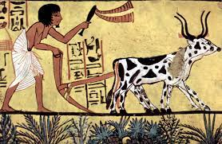

The main goal of building this website is to help people understand how life changing farming or agriculture in general can be.
Most part of this world is struggling with finding food to eat because the important of agriculture remains ignored. I bet this can help some of those who are still in needs.
The origin of agriculture

Historical of AgricultureEras of the origin of agriculture